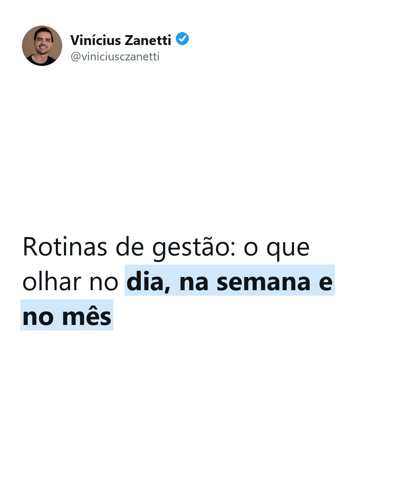

Rotina de gestão do restaurante: o que fazer todo dia, toda semana e todo mês
Fluxo de caixa que ninguém alimenta não serve. Checklist que ninguém preenche não garante padrão. No livro Restaurante no Controle, Vinícius Zanetti separa a gestão em três ritmos e mostra o que entra em cada um.
Publicado em 16/11/2026
O dono de hamburgueria ou pizzaria trabalha 14 horas por dia e, no fim do mês, não sabe dizer se o negócio deu lucro. O problema raramente é falta de esforço. É falta de rotina. A planilha foi montada, a ficha técnica foi feita, o checklist foi impresso, e nada disso é usado com regularidade.
No livro Restaurante no Controle, o consultor Vinícius Zanetti dedica um capítulo inteiro a esse ponto, o Garante, terceira etapa do método M.E.G.A. A ideia é simples: a gestão acontece em três ritmos, todo dia, toda semana e todo mês, e cada ritmo tem tarefas que não podem pular.

"Um fluxo de caixa que não é alimentado diariamente não serve. Uma ficha técnica que o cozinheiro desconhece não protege a margem. Um checklist que a equipe ignora não garante padrão."Vinícius Zanetti, no capítulo Garante do livro Restaurante no Controle
O que o dono de restaurante faz no dia a dia?
A pergunta aparece entre as buscas mais feitas no Google sobre gestão de restaurante, e a resposta mais comum é uma lista de tarefas operacionais: abrir, conferir a limpeza, atender, fechar. Tudo isso importa, mas é operação. A rotina de gestão é outra coisa. É o conjunto de registros e conferências que deixa o dono saber, a qualquer momento, quanto entrou, quanto saiu e se a operação seguiu o padrão.
Não é sobre fazer mais coisas. É sobre fazer as mesmas coisas sempre, no mesmo horário, com alguém responsável por elas. O livro resume assim:
"A regularidade é o que transforma uma boa prática em cultura de gestão."Vinícius Zanetti, no capítulo Garante do livro Restaurante no Controle
Qual é a rotina diária de gestão do restaurante?
São cinco tarefas, todas curtas, todas no fim ou no começo do turno. O livro lista cada uma:
- Registrar o faturamento por canal. Salão, balcão, delivery próprio, iFood. O total do dia sozinho não diz qual canal está crescendo e qual está caindo.
- Lançar as despesas no fluxo de caixa. Tudo o que saiu no dia, no dia. Despesa anotada uma semana depois vira despesa esquecida.
- Conferir o estoque dos insumos críticos. Não é o inventário completo. São os itens que mais pesam no custo ou que não podem faltar, como carne, queijo e embalagem, no caso de uma hamburgueria.
- Preencher os checklists operacionais. Abertura, fechamento, temperatura de câmara e freezer, organização do estoque.
- Fechar o caixa com conferência de valores. O que o sistema diz que entrou precisa bater com o que está na gaveta, na maquininha e no Pix.
Nenhuma dessas tarefas precisa ser feita pelo dono. Precisa ser feita todo dia, por alguém com nome. Quando o fechamento de caixa fica para amanhã, o erro de hoje se mistura com o de amanhã e ninguém mais consegue achar a diferença.
O que entra no checklist de abertura e fechamento?
"Checklist de abertura de restaurante" e "checklist de fechamento" estão entre as buscas sugeridas pelo Google para o tema. O livro cita três tipos que reduzem erro de forma direta: abertura e fechamento, controle de temperaturas e organização do estoque.
Neste exemplo, um checklist de fechamento de hamburgueria teria itens como: chapa desligada e limpa, freezer fechado e na temperatura, insumos abertos etiquetados com data, caixa fechado e conferido, lixo retirado. O conteúdo muda de uma operação para outra. O que não muda é a regra: cada item é marcado por quem fez, e alguém confere.
Checklist que só existe na parede não protege nada. O valor dele aparece quando alguém olha o papel do dia anterior e percebe que a temperatura do freezer não foi anotada.
O que o dono deve olhar toda semana?
A semana é o ritmo em que o dono ainda consegue corrigir o mês. O livro lista quatro tarefas:
- Fluxo de caixa projetado contra realizado. O que estava previsto para entrar e sair, e o que de fato entrou e saiu. A diferença mostra se o mês vai fechar como o planejado.
- Vendas por categoria. Lanches, pizzas, bebidas, sobremesas, combos. Uma categoria que cai três semanas seguidas é um sinal antes de virar problema.
- CMV parcial da semana. Não precisa esperar o fim do mês para saber se o custo da mercadoria está fora da faixa. Na referência da Zatti, o CMV saudável fica entre 25% e 33% do faturamento.
- Reunião rápida com a liderança da equipe. Quem toca a cozinha, o salão e o delivery, alinhando o que funcionou e o que precisa mudar.
Essa reunião semanal é um bom lugar para olhar os erros que custaram dinheiro, como mercadoria perdida e pedido estornado. O método está detalhado na matéria O erro mais caro da semana. E o cálculo do CMV, que não é o total de compras do mês, está explicado em CMV não é compras do mês.
O que fazer todo mês na gestão do restaurante?
O mês é o ritmo da decisão. É quando os números da semana viram resultado e o dono decide o que muda. São cinco tarefas:
- Fechar a DRE gerencial. Faturamento, deduções, CMV, margem de contribuição, custos fixos e resultado. É o documento que responde se o restaurante deu lucro.
- Revisar os indicadores financeiros. CMV, margem de contribuição, ticket médio, custo fixo sobre faturamento, comparados com o mês anterior e com a meta.
- Analisar o desempenho por canal. Salão e delivery têm custos diferentes. Um canal pode vender muito e deixar pouco.
- Revisar estoque e condições com fornecedores. Preço, prazo e qualidade de quem entrega.
- Planejar o mês seguinte. Meta de faturamento, compras previstas, datas de pico, escala da equipe.
Quem faz cada rotina?
O erro mais comum é colocar tudo nas costas do dono. Aí a rotina dura enquanto ele tem fôlego, e some na primeira semana corrida. A tabela abaixo mostra a divisão de um jeito possível. Os responsáveis são um exemplo; cada restaurante define os seus.
| Ritmo | Tarefa | Neste exemplo, quem faz | O que responde |
|---|---|---|---|
| Diário | Faturamento por canal e fechamento de caixa | Responsável pelo caixa do turno | Quanto entrou hoje, e por onde |
| Diário | Despesas no fluxo de caixa | Quem cuida do financeiro | Quanto saiu hoje |
| Diário | Estoque crítico e checklists | Líder de cozinha | A operação seguiu o padrão? |
| Semanal | Projetado x realizado, vendas por categoria, CMV parcial | Dono ou gerente | O mês está no rumo? |
| Semanal | Reunião com a liderança | Dono, com os líderes | O que corrigir na semana que vem |
| Mensal | DRE gerencial, indicadores, canais, fornecedores, plano | Dono | O restaurante deu lucro e o que muda |
Repare que o dono aparece com força só no semanal e no mensal. O diário é da equipe. Esse é o desenho que permite a ele sair da operação sem perder o controle.
Por que a rotina para de ser feita?
O livro aponta o motivo: a operação de restaurante é intensa, sobra pouco tempo para treinar, e a rotatividade da equipe é alta. Quando a pressão do serviço aumenta, a equipe volta aos velhos hábitos. A rotina não morre num dia. Ela é pulada uma vez na sexta lotada, depois outra no sábado, e em três semanas ninguém lembra que existia.
Duas coisas seguram a rotina de pé. A primeira é ter um responsável com nome para cada tarefa, e não "a equipe". A segunda é alguém conferir. Se ninguém pergunta pelo fechamento de caixa de ontem, ele deixa de ser feito.
Por onde começar: escolha só o fechamento de caixa com conferência e o lançamento diário das despesas. Faça os dois por 30 dias seguidos, sem falhar. Depois acrescente o CMV parcial da semana. Rotina que começa grande demais não passa do primeiro mês.
Perguntas frequentes
Qual é a rotina de gestão diária de um restaurante?
Registrar o faturamento por canal, lançar as despesas no fluxo de caixa, conferir o estoque dos insumos críticos, preencher os checklists operacionais e fechar o caixa com conferência de valores.
O que o dono de restaurante deve acompanhar toda semana?
O fluxo de caixa projetado contra o realizado, as vendas por categoria, o CMV parcial da semana e uma reunião rápida de alinhamento com a liderança da equipe.
O que fazer no fechamento do mês do restaurante?
Fechar a DRE gerencial, revisar os indicadores financeiros, analisar o desempenho por canal, revisar estoque e condições com fornecedores e planejar o mês seguinte.
O dono precisa fazer todas as rotinas sozinho?
Não. As tarefas diárias podem ficar com a equipe, desde que cada uma tenha um responsável com nome e alguém confira. O dono concentra a análise semanal e a decisão mensal.
Fontes
- Vinícius Zanetti, Restaurante no Controle: Método M.E.G.A. de gestão para restaurantes (Belo Horizonte, 2026), capítulo 4, Garante. Rotinas diárias, semanais e mensais e as citações de Vinícius Zanetti. Os checklists citados estão no capítulo 3, Estrutura.
- CMV saudável de 25% a 33% do faturamento: referência de trabalho da Zatti Consultoria. O exemplo de checklist e a divisão de responsáveis da tabela são hipotéticos.